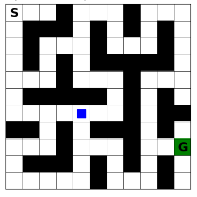

Overview
This phase builds a custom tabular gridworld framework for studying reinforcement learning algorithms in controlled navigation problems. The goal is to make agent behavior easy to inspect before moving to continuous and robotics-based environments.
Custom Discrete Gridworld Environment
The parameters of the test environment are as follows:
- 10x10 Gridworld environment
- Regular states (white), walls (black), start ('S'), and goal (green)
- Deterministic state transitions
- Reward of -1 for every non-terminal transition
- Up, down, left, and right agent action selection
- Square blue agent
- Matplotlib-based frame visualization
